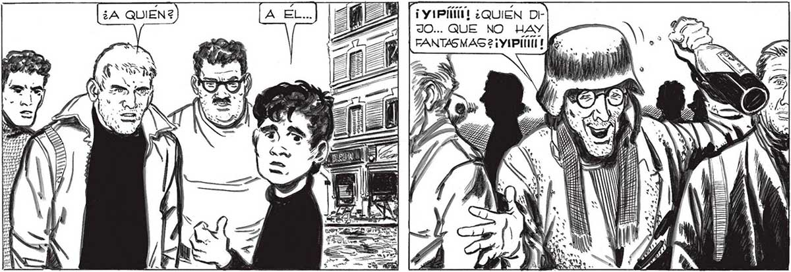
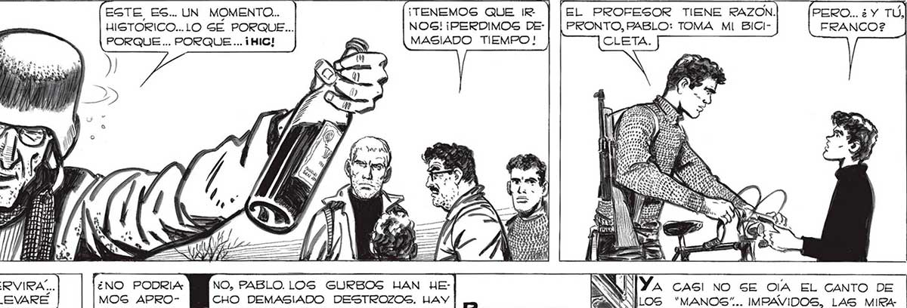

292 MOSCA! ¡EL HISTORIADOR! NO GE... SI SOY YO... O MI FANTASMA... TAMPOCO USTEDES... SON USTEDES...NI...¡HIC! ¡MAS BORRA CHO QUE UNA ¡y IP ¿QUIÉN DiJO... QUE NO HAY FANTASMAS 2 ¡Y 1Pitio! EL PROFESOR TIENE RAZON. PERO... ¿ Y TÚ, PRONTO, PABLO: TOMA MI BICI- FRANCO? ¡TENEMOS QUE IR | NOS! ¡PERDIMOS DEMASIADO TIEMPO! EGTE ES.. UN MOMENTO. HISTORICO...LO SÉ PORQUE... PORQUE ... PORQUE ... ¡HIC! ESE TRICICLO ME GERVIRA... EN LUGAR DE PAN LLEVARE NO, PABLO. LOS GURBOS JUAN HECHO DEMASIADO DESTROZOS, HAY ESCOMBROS POR TODAS PARTES. ¿NO PODRIA: MOS APROVECHAR AlGÚN AUTO? [SS CAGI NO GE OA EL CANTO DE “MANOS”... IMPAVIDOS, LAS MIRA PERDIDAS, LOS HOMBRES-ROBOTS... Resnunamos LA FUGA. CUA- = A DRAG Y CUADRAS, LIN Y ¿Na | ALO LARGO DEL | : | DETENIDO EJER CITO DE HOMBRES- ROBOTS, 'CAGCARUDOS” Y “MANOS”. LOS ESIVPULTÍ "GURBOS” SE- SORMNVE GUIAN COMBA- [as NN A haa az T TILL a >, É Ll TARA ALIAS == 5 A ( ] do A pe Va TIENDOSE. EL y SUELO RETEMBLABA.

